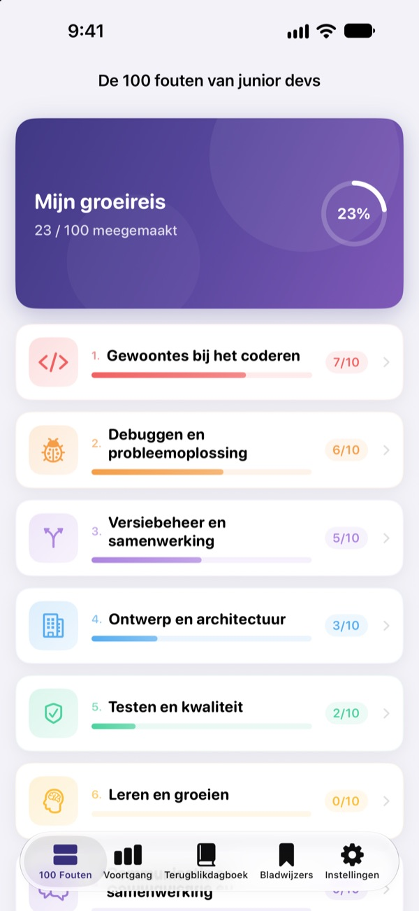
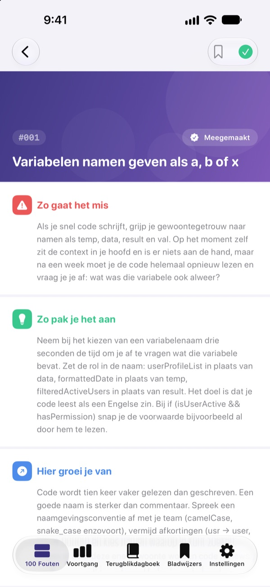
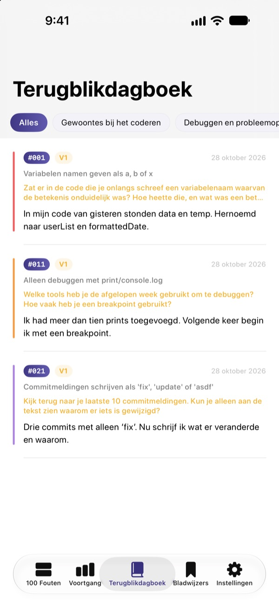
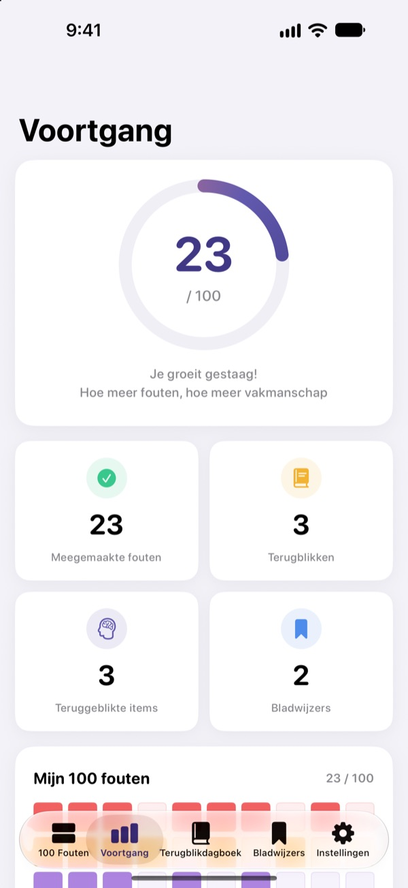

Ken de fouten
voordat ze pijn doen
De 100 fouten die beginnende developers het vaakst maken, op één plek. Bij elke fout lees je wat er gebeurt, wat je moet doen en wat je ervan leert, en beantwoord je een reflectievraag zodat je dezelfde fout geen twee keer maakt.
De eerste 30 fouten zijn gratis. Voor iPhone, iPad en Mac.

Open een fout
Dit zijn de 10 fouten uit de eerste gratis categorie, woord voor woord zoals in de app. Markeer wat je al hebt meegemaakt als Meegemaakt.
Weer dezelfde opmerking in de code review?
Onduidelijke variabelenamen, functies van 200 regels, gekopieerde code. Elke senior heeft het meegemaakt, maar zelf merk je het meestal pas als je erin trapt. 100 Fouten laat je die fouten vooraf zien en laat je nadenken over je eigen werk, zodat je ze niet herhaalt.
Wat er gebeurt, wat je doet, wat je leert
Elke fout is opgedeeld in drie delen: wat er gebeurt, wat je moet doen en wat je ervan leert.
Tien categorieën, van gewoontes bij het coderen tot beveiliging en prestaties, met alleen fouten die in echte teams steeds terugkomen.

Reflectievragen, zodat het blijft hangen
Bij elke fout horen 4 reflectievragen, 400 in totaal. Beantwoord ze met je eigen projecten in gedachten en wat je leest wordt ervaring.
Je antwoorden komen per categorie in je terugblikdagboek, klaar om terug te lezen.

Zie hoe ver je bent gekomen
Vink de fouten af die je hebt meegemaakt en je voortgang groeit per categorie en in totaal. Zet een bladwijzer bij wat je nog eens wilt lezen.
Alles synchroniseert via iCloud tussen iPhone, iPad en Mac.

In drie stappen aan de slag
- 1
Kies een categorie
Gewoontes bij het coderen, debuggen en versiebeheer zijn gratis open.
- 2
Lees en vink af
Tik op Meegemaakt bij de fouten die je zelf hebt gemaakt.
- 3
Blik terug
Schrijf een antwoord, al is het kort. Het komt in je terugblikdagboek.
De 10 categorieën
- Gewoontes bij het coderen
- #001–#010 · Gratis
- Debuggen en probleemoplossing
- #011–#020 · Gratis
- Versiebeheer en samenwerking
- #021–#030 · Gratis
- Ontwerp en architectuur
- #031–#040 · PRO
- Testen en kwaliteit
- #041–#050 · PRO
- Leren en groeien
- #051–#060 · PRO
- Communicatie en samenwerking
- #061–#070 · PRO
- Deployment en beheer
- #071–#080 · PRO
- Beveiliging en data
- #081–#090 · PRO
- Performance en optimalisatie
- #091–#100 · PRO
Elke categorie telt 10 fouten, en elke fout 4 reflectievragen.
30 gratis. Alle 100 met PRO.
Gratis
- De eerste 3 categorieën, 30 fouten
- De 120 reflectievragen daarbij
- Checklist, terugblikdagboek, voortgang en bladwijzers
- iCloud-synchronisatie (iPhone, iPad, Mac)
100 Fouten PRO
- De andere 7 categorieën, 70 fouten extra (#031–#100)
- 280 extra reflectievragen
- Alle toekomstige inhoudsupdates
Maandelijks, jaarlijks (tot 50% goedkoper dan maandelijks) of een eenmalige aankoop voor altijd.
Geen persoonsgegevens, geen analysetools en geen advertenties.
Veelgestelde vragen
Wat is gratis?
Alle 30 fouten met hun vragen in de categorieën Gewoontes bij het coderen, Debuggen en probleemoplossing en Versiebeheer en samenwerking. De checklist, het terugblikdagboek, de voortgang, bladwijzers en iCloud-synchronisatie zijn ook gratis.
Hoe gebruik ik PRO op een ander apparaat?
Log in met dezelfde Apple ID en tik op Aankopen herstellen in het abonnementsscherm.
Hoe zeg ik mijn abonnement op?
Op elk moment via Instellingen › Apple ID › Abonnementen. Het abonnement wordt automatisch verlengd, tenzij je minstens 24 uur voor het einde van de huidige periode opzegt. De aankoop voor altijd betaal je één keer.
Mijn gegevens synchroniseren niet tussen apparaten.
Controleer of alle apparaten met dezelfde Apple ID bij iCloud zijn ingelogd en of iCloud voor deze app aanstaat in Instellingen. Voor synchronisatie is ook een netwerkverbinding nodig.
Hoe wis ik alles?
Tik op Alle gegevens wissen in de instellingen van de app. Vinkjes, antwoorden en bladwijzers worden verwijderd, en dat kan niet ongedaan worden gemaakt.
Op welke apparaten werkt het?
iPhone, iPad en Mac. PRO wordt ontgrendeld op alle apparaten met dezelfde Apple ID.
Worden mijn gegevens ergens naartoe gestuurd?
Nee. Je vinkjes en antwoorden staan alleen op je eigen apparaten en in je eigen iCloud. De app verzamelt geen persoonsgegevens en heeft geen analysetools of advertenties.
Vragen of suggesties? Mail naar leeo@kakao.com.